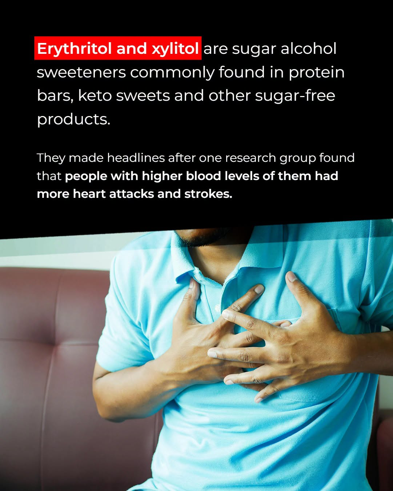
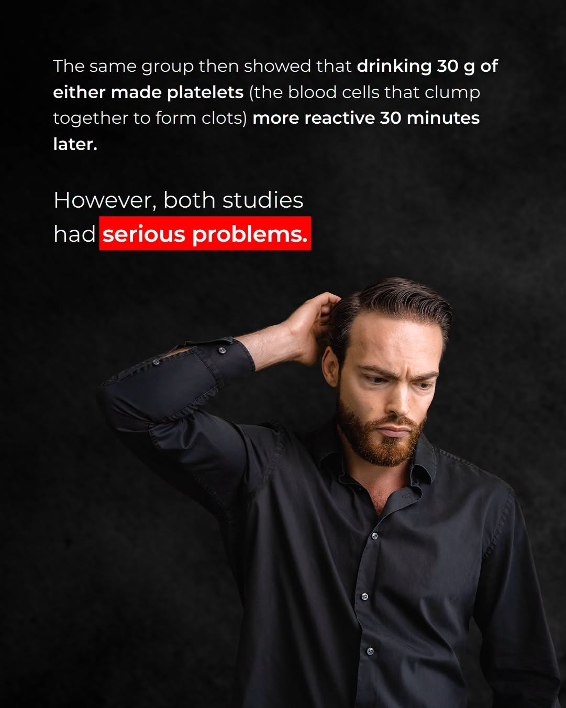
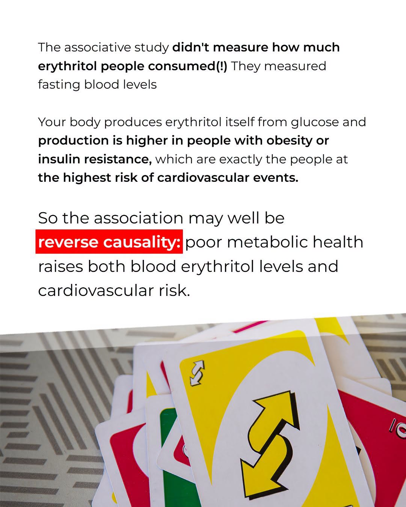
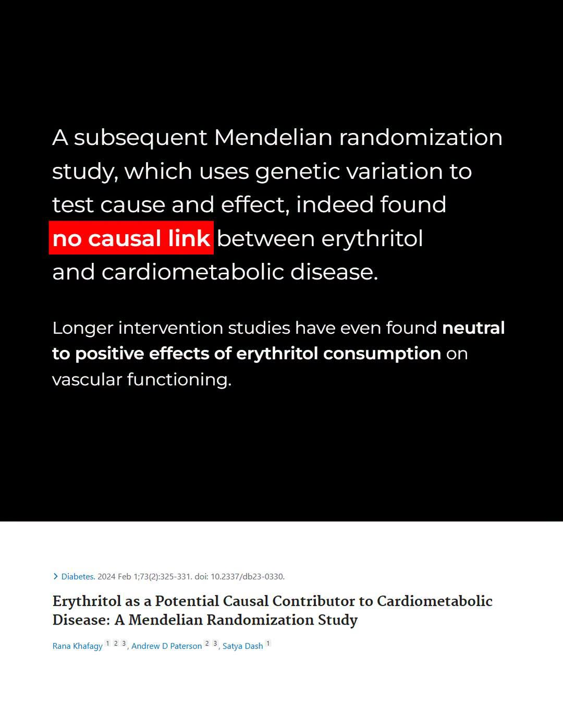

It is still very unclear whether sugar alcohols like xylitol and erythritol actually do raise the risk for CVD. The initial studies at the Cleveland Clinic were very limited and had issues.
#erythritolHD #xylitolHD #clevelandclinicHD #stanleyhazenHD
Erythritol and xylitol are sugar alcohol sweeteners commonly found in protein bars, keto sweets and other sugar-free products. They made headlines after one research group found that people with higher blood levels of them had more heart attacks and strokes.
The same group then showed that drinking 30 g of either made platelets (the blood cells that clump together to form clots) more reactive 30 minutes later. However, both studies had serious problems.
The associative study didn't measure how much erythritol people consumed(!) They measured fasting blood levels. Your body produces erythritol itself from glucose and production is higher in people with obesity or insulin resistance, which are exactly the people at the highest risk of cardiovascular events. So the association may well be reverse causality: poor metabolic health raises both blood erythritol levels and cardiovascular risk.
A subsequent Mendelian randomization study, which uses genetic variation to test cause and effect, indeed found no causal link between erythritol and cardiometabolic disease. Longer intervention studies have even found neutral to positive effects of erythritol consumption on vascular functioning.
The alarm-causing experiment was even worse with only 10 participants per group, less than their preregistered target, who were not randomized or blinded and were not recruited from the same pool. The statistical analysis was poor without any actual between-subject comparison.
A new Swiss study, still in preprint, used a stronger design: a randomized crossover, in which every participant serves as their own control. 14 Healthy participants consumed 50 g of erythritol, 33.5 g of xylitol (well into laxative territory) or water on 3 separate occasions.
Despite large increases in blood erythritol levels, neither sweetener increased platelet aggregation or markers of platelet activation, endothelial activation or coagulation compared to water, and adding erythritol directly to platelet-rich plasma in the lab didn’t increase aggregation either. Multiple measures showed statistical equivalence between water and erythritol, supporting ‘truly no difference’ rather than just ‘not significantly different’.
Overall, there's no good evidence that erythritol or xylitol are unsafe in any dose that won't give you projectile diarrhea. Fear mongering may do more harm than good for public health, because erythritol is a useful sugar substitute due to its a sugar-like texture, and it's almost certainly healthier than table sugar. Plus, low-calorie sweeteners can improve diet adherence, and fat loss has obvious health benefits.
Looking for based fitness knowledge? Check out my online PT Certification Course: DM 'course' for more info
#erythritol #xylitol #sweeteners #nutrition #cardiovascular #health #mennohenselmans #personaltrainer #personaltrainers #personaltraining #personaltrainerlife #personaltraineronline




